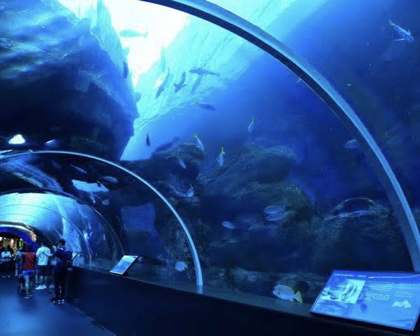
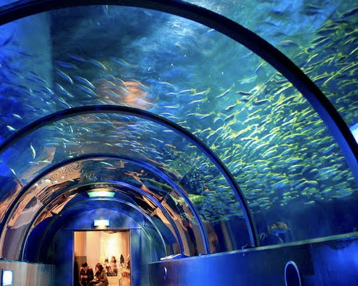

水族館の深層へ。

トンネル水槽
水族館において、大水槽以外の水槽について考えたことはあるか。
大水槽は水族館のトレードマークだ。それは良い。
しかし、大水槽に辿り着くまでに展示されている水槽を君たちは見逃しているんじゃないか？
私はそんな、でっかいサメやイルカに気を取られてばかりの君たちに、トンネル水槽の魅力を伝えたい。
トンネル水槽とは何か。百聞は一見に如ずだ、上の写真を見てほしい。
みな一度は通ってはしゃいだ記憶があるだろう。トンネルを模した構造の水槽の中を、
たくさんの魚たちが泳いでいるあれだ。トンネル水槽は全ての水族館に展示されているわけではない。
規模によってはない所もある。だからこそ、そこにあるトンネル水槽を大事に観覧してほしい。
水族館によって、展示されている魚の種類も数も、水槽の広さも長さもさまざまである。
しかし、どの水族館のトンネル水槽も訪れた人をより内部へと、深層へと誘う役割を担っている。

特有の魅力
また、普通の水槽では味わえない特殊な体験ができる。
泳いでいる魚のお腹が見れるし、まるで自分が海の中を歩いているかのような感覚を味わえる。
そして、トンネル水槽は、入り口という点においても特殊である。
基本的に、入り口は出口を兼ねる。入り口は入り口であり、出口なのだ。
しかし水族館は通り抜け構造であるから、トンネル水槽を通るのはその奥に進むときだけだ。
つまり、入り口としての単体の意味を持つ。大水槽への導入、すなわち水族館の深層への入り口である。
Gallery
Click on these photos to jumo to the site.
トンネルを抜けたら、どんな魚たちが我々を待っているのだろう。